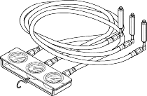
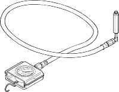
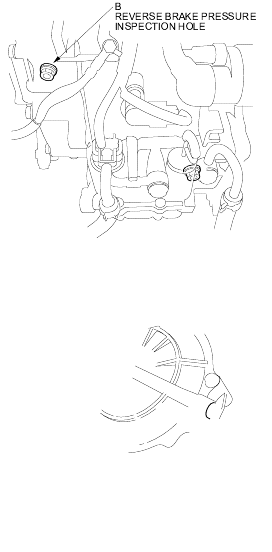

- A/T oil pressure gauge set, 07406-0020004
- A/T low pressure gauge, 07406-0070001
- Before testing, be sure the transmission fluid is filled to the proper level.
- Raise the front of the vehicle and make sure it is securely supported.
- Set the parking brake and block rear wheels securely.
- Allow the front wheels to rotate freely.
- Warm up the engine (the radiator fan comes on), then stop it and connect the tachometer.
- Connect the oil pressure gauges to each inspection hole and do not allow dust or other foreign particles to enter the holes.
TORQUE: 18 Nm (1.8 kgf/m, 13 lbf/ft)
NOTE:
- Drive pulley pressure may be above 3,430 kPa (3.43 MPa, 35.0 kgf/cm2, 498 psi) when there is a transmission problem that causes the PCM to go into the fail-safe mode.
- Use a commercially available oil pressure gauge that measures 4,900 kPa (4.90 MPa, 50.0 kgf/cm2, 711 psi) or more and use the A/T oil pressure gauge set and the A/T low pressure gauge.
A/T OIL PRESSURE GAUGE SET, 07406-0020004

A/T LOW PRESSURE GAUGE, 07406-0070001

